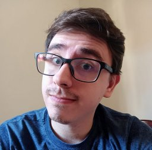
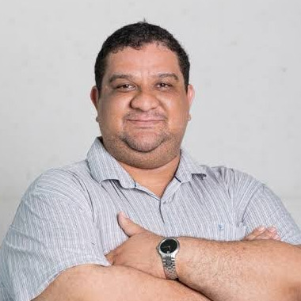
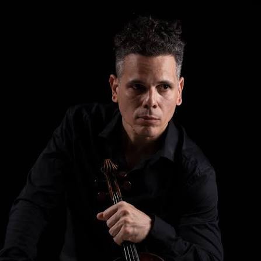

Pessoas
Quem organiza o ciclo e quem já tem data marcada para apresentar.
Organização
Nuno Sousa
Nivaldo Antonio Portela de Vasconcelos
Rodrigo Bonacin
Johseph Paballo Gomes de Souza
Palestrantes com data marcada

Edgard Morya
19/08/2026 · Seminário 1
Gerente do Instituto Internacional de Neurociências Edmond e Lily Safra (IIN-ELS) do Instituto Santos Dumont (ISD) e docente do Curso de Mestrado em Neuroengenharia do IIN-ELS. Pós-Doutorado (2006) e doutorado (2003) em Ciências (Fisiologia Humana) pelo Instituto de Ciências Biomédicas da USP; graduação em Fisioterapia pela Faculdade de Medicina da USP (1996).

Fernando Rezende Zagatti
16/09/2026 · Seminário 2
Graduado em Ciência da Computação pela Universidade do Sagrado Coração (2018) e mestre em Ciência da Computação pela Universidade Federal de São Carlos (2021). Doutorando em Ciência da Computação pela UFSCar e Tecnologista Pleno 1 do Centro de Tecnologia da Informação Renato Archer. Atua em aprendizado de máquina, processamento de linguagem natural, meta-aprendizado e AutoML.

Leandro Álvaro de Alcantara Aguiar
23/09/2026 · Seminário 3
Licenciado em Ciências Biológicas (UFRPE, 2012), mestre (2015) e doutor (2019) em Biociência Animal pela mesma instituição. O doutorado tratou da sincronização de fase entre áreas corticais durante uma tarefa de contagem de tempo, em parceria com o Departamento de Física da UFPE. Foi investigador do Instituto de Investigação da Vida e da Saúde (ICVS) da Universidade do Minho, em Portugal, entre 2022 e 2025. É Professor Visitante na UFPE desde 2025, onde leciona na pós-graduação em Física. Atua em eletrofisiologia, dinâmica cortical, sincronização de osciladores neurais e criticalidade.

Renzo Torrecuso
07/10/2026 · Seminário 5
Pesquisador no Departamento e no Programa de Pós-Graduação em Engenharia Biomédica da UFPE, onde chegou pelo programa Conhecimento Brasil, do CNPq, de atração e fixação de talentos. Coordena o projeto que dá nome a esta apresentação, que emprega técnicas de conectividade cerebral e ciência de dados para entender como o cérebro processa o estresse.